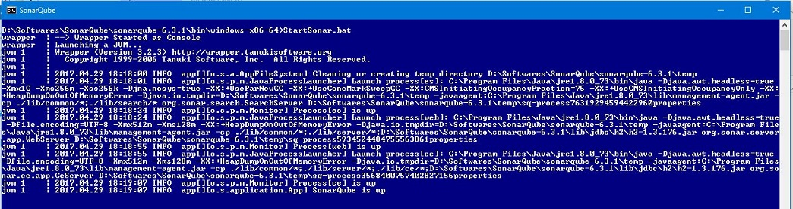
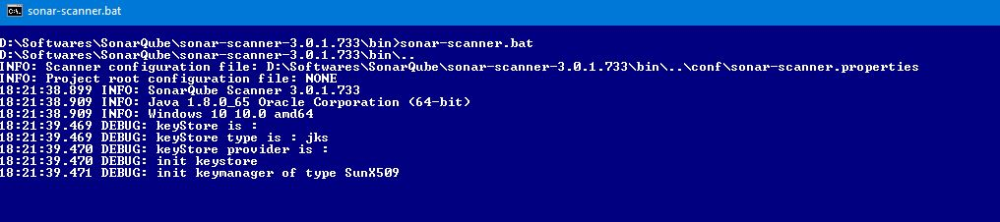
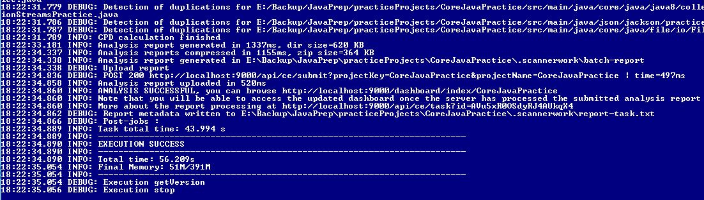
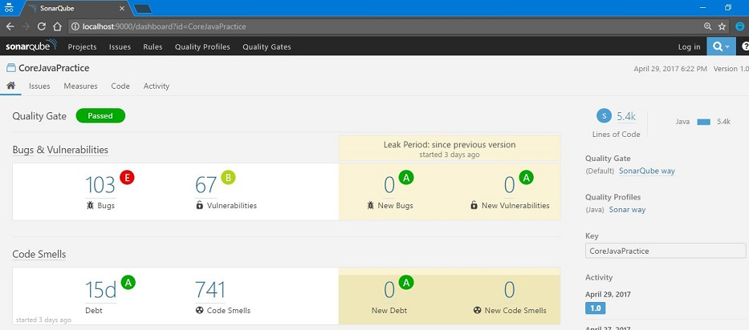

Steps for setting sonarqub
- Download the latest sonarqube
- Download sonar scanner
- Configure sonar scanner about the project details
- Run sonarqube
- Run sonar scanner
- Open the report in the browser
Download the latest sonarqube
- Download the latest sonarqube from here
- I downloaded sonarqube-6.3.1
- Unzip it
Download sonar scanner
- Download the sonar scanner from here
- Download by clicking on Windows 64 bit (or) Any
- Unzip it
Configure sonar scanner about the project details
Run sonarqube
- Open command prompt
- Go to unzipped folder/sonarqube-6.3.1/bin/windows-x86-64
- Run StartSonar.bat
- 
Run sonar scanner
- Open command prompt
- Go to sonar scanner unzipped folder/sonar-scanner-3.0.1.733/bin
- Run sonar-scanner.bat
- Starting the sonar scanner
- 
- Sonar scanner completed and generated the report at http://localhost:9000/dashboard/index/CoreJavaPractice
- 
- This will scan the project we configured in properties file and generates report
Open the report in the browser
- Open the link http://localhost:9000/dashboard/index/CoreJavaPractice
- 